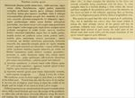

Click on images to enlarge
{kind=link}

Fig. 1. Paropsis latipes description
Name
Paropsis latipes Blackburn, 1892
Corresponds to
Ta68.
Diagnosis and Notes
Blackburn (1896) deals with latipes as part of his 'subgroup i' (i.e., those species with "strongly marked characters"). Within that group, he characterises it as:
AAA. Prosternum normal, but other characters exceptional, as follows:-;
BBB. The exceptional characters lie in the elytral epipleurae;
CC. Inner (horizontal) part of epipleurae nearly reaches the apex as a distinct ledge;
D. Basal ventral segment coarsely punctured;
E. Sides of prothorax strongly explanate;
FF. Underside black;
G. Interstices of elytral punctures strongly rugulose, almost concealing the punctures.
This is almost certainly the same species as Ta68, an abundant insect at higher elevations in the alpine regions of Victoria and southern N.S.W. Blackburn points out the greatly dilated basal segment of tarsi of the anterior and middle legs, something that is quite unusual in Trachymela.
Type specimen
BMNH
Notes from examination of type specimen, June 2010 (no photos of type were taken): T. latipes Blackburn is a large species with large, clearly separated punctures with at most a few, very small pustules. Surface of body is light-brown to dark-brown in different specimens. By comparison with photos of Ta68, this seems to be the same as that species.
Original description
Translation of original description (Figure 1) by ChatGPT, 04/2026:
Subrotund (female slightly less broad); very convex; above somewhat dull, yellowish-brown, with the head posteriorly (in some specimens), a small spot on each side of the pronotum somewhat lateral, the elytral suture more or less distinctly, two somewhat submarginal bands on each elytron (in most specimens almost obsolete), and some tubercles (in most specimens scarcely darkened) black. Head and pronotum closely, rather weakly, and somewhat rugosely punctulate; the latter (much more coarsely punctured toward the sides) much more than twice as wide as long, anterior margin deeply emarginate, slightly convex in the middle; sides strongly rounded (greatest width approximately at the middle); anterior angles rather produced but not acute; posterior angles absent. Scutellum pitchy, somewhat carinate, obscurely punctate. Elytra very densely, fairly strongly, somewhat in rows punctulate; with some tubercles arranged in rows (these in some specimens pitchy or black); humeral angle fairly rounded. Underside black, shining (sides of prosternum narrowly testaceous), fairly closely and strongly punctate (except the middle of the metasternum, which is almost smooth). Prosternum in the middle with two keels, rather narrow, the keels converging anteriorly. Palpi and legs reddish-testaceous (femora more or less darker); antennae pitchy, testaceous at the base.
♂ Fore tarsi with the basal segment of the anterior tarsus greatly dilated, not at all narrower than the third; apical ventral segment slightly bi-gibbous, apex truncate and carina-like.
♀ Apical ventral segment with a transverse carina behind the base, apex narrowly emarginate.
Length 5 (scarcely) lines [~10.6 mm]; width 4 lines [~8.5 mm].
References
Blackburn, T. 1892, "Notes on Australian Coleoptera, with descriptions of new species. Part X", Proceedings of the Linnean Society of New South Wales, ser. 2, vol. 6, no. 3, 479-550 (page 546).
Copyright © 2026. All rights reserved.